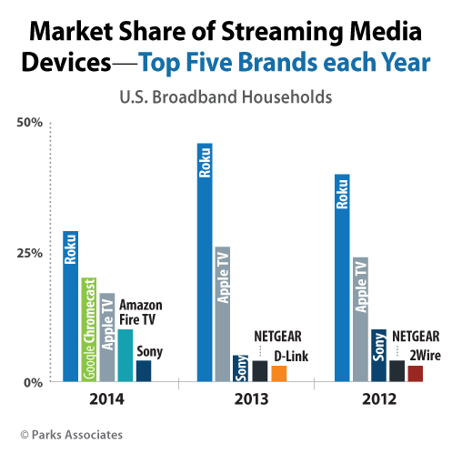

Statisctics
- Streaming on Roku devices grew by 70% in 2013 to 1.7 billion hours for the year
- The average Roku player streams 13 hours per week though 25% of Roku players stream 35 hours per week (the average household TV watching from Nielsen is 34 hours per week)
- Roku doubled the number of channels – currently at more than 1,200
- Roku has 20 Roku Ready partners right now and will likely certify 125 devices in 2013
- In 2015, Roku streamed 5.5 billion hours of content, up 73% from 2014, and ended the year with 9 million monthly active accounts.
